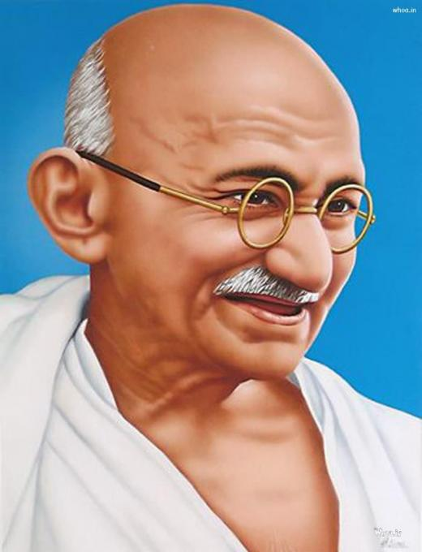

Mahatma Gandhi, tên gọi của Mohandas Karamchand Gandhi, (sinh ngày 2 tháng 10 năm 1869, Porbandar, Ấn Độ - mất ngày 30 tháng 1 năm 1948 tại Delhi) bị ám sát, Luật sư, chính trị gia, nhà hoạt động xã hội và nhà văn Ấn Độ, người đã trở thành nhà lãnh đạo của phong trào dân tộc chủ nghĩa chống lại sự thống trị của Anh ở Ấn Độ. Vì vậy, ông được coi là cha đẻ của đất nước mình. Gandhi được quốc tế đánh giá cao vì học thuyết của ông về biểu tình bất bạo động (satyagraha ) để đạt được tiến bộ chính trị và xã hội.

.Gandhi đã cố gắng hoàn thành điều gì với hoạt động tích cực của mình?
Ban đầu, các chiến dịch của Gandhi nhằm chống lại địa vị hạng hai mà người Ấn Độ nhận được dưới tay chế độ Anh. Tuy nhiên, cuối cùng, họ chuyển trọng tâm sang đánh đổ hoàn toàn chế độ Anh, một mục tiêu đã đạt được trong những năm ngay sau Thế chiến II. Chiến thắng đã bị hủy hoại bởi thực tế là bạo lực giáo phái bên trong Ấn Độ giữa những người theo đạo Hindu và đạo Hồi đòi hỏi sự thành lập của hai quốc gia độc lập - Ấn Độ và Pakistan - trái ngược với một Ấn Độ thống nhất.
Niềm tin tôn giáo của Gandhi là gì?
Gia đình của Gandhi thực hành một loại Vaishnavism, một trong những truyền thống chính trong Ấn Độ giáo, được đúc kết thông qua các nguyên lý nghiêm ngặt về mặt đạo đức của Kỳ Na giáo — một đức tin Ấn Độ mà các khái niệm như khổ hạnh và bất bạo động là quan trọng. Nhiều niềm tin đặc trưng cho quan điểm tâm linh của Gandhi sau này khi lớn lên có thể bắt nguồn từ quá trình nuôi dạy của ông. Tuy nhiên, sự hiểu biết của anh về đức tin không ngừng phát triển khi anh gặp những hệ thống niềm tin mới. Chẳng hạn, sự phân tích của Leo Tolstoy về thần học Cơ đốc giáo đã ảnh hưởng rất nhiều đến quan niệm của Gandhi về tâm linh, cũng như các văn bản như Kinh thánh và Quʾrān, và lần đầu tiên ông đọc Bhagavadgita—Một sử thi của người Hindu — trong bản dịch tiếng Anh của nó khi sống ở Anh.
Chủ nghĩa tích cực của Gandhi đã truyền cảm hứng cho những phong trào xã hội nào khác?
Ở Ấn Độ, triết học của Gandhi tồn tại trong thông điệp của những nhà cải cách như nhà hoạt động xã hội Vinoba Bhave. Ở nước ngoài, các nhà hoạt động như Martin Luther King, Jr., đã vay mượn rất nhiều từ thực hành bất bạo động và bất tuân dân sự của Gandhi để đạt được mục đích bình đẳng xã hội của riêng họ. Có lẽ tác động lớn nhất là sự tự do mà phong trào Gandhi giành cho Ấn Độ đã gióng lên hồi chuông báo tử cho các doanh nghiệp thuộc địa khác của Anh ở châu Á và châu Phi. Các phong trào độc lập quét qua họ như cháy rừng, với ảnh hưởng của Gandhi đã thúc đẩy các phong trào hiện có và khơi dậy những phong trào mới.
Cuộc sống cá nhân của Gandhi như thế nào?
Cha của Gandhi là một quan chức chính quyền địa phương làm việc dưới quyền thống trị của Raj thuộc Anh, và mẹ của ông là một tín đồ tôn giáo - giống như những người còn lại trong gia đình - thực hành theo truyền thống Vaishnavist của Ấn Độ giáo. Gandhi cưới vợ, Kasturba, khi mới 13 tuổi và họ có với nhau 5 người con. Gia đình ông ở lại Ấn Độ trong khi Gandhi đến London vào năm 1888 để học luật và đến Nam Phi vào năm 1893 để thực hành luật. Ông đưa họ đến Nam Phi vào năm 1897, nơi Kasturba sẽ hỗ trợ ông trong hoạt động của mình, điều mà cô tiếp tục làm sau khi gia đình chuyển về Ấn Độ vào năm 1915.
Ý kiến đương thời về Gandhi là gì?
Như được ca ngợi là một nhân vật như Gandhi, hành động và niềm tin của ông không thoát khỏi sự chỉ trích của những người cùng thời. Các chính trị gia theo chủ nghĩa tự do cho rằng ông đã đề xuất quá nhiều thay đổi quá nhanh chóng, trong khi những người trẻ cấp tiến lại chê bai ông vì đã không đề xuất đủ. Các nhà lãnh đạo Hồi giáo nghi ngờ anh ta thiếu bình tĩnh khi đối xử với người Hồi giáo và cộng đồng tôn giáo Ấn Độ giáo của riêng anh ta, và Dalits (trước đây được gọi là không chạm tới) cho rằng anh ta bất cần trong ý định rõ ràng là xóa bỏ chế độ đẳng cấp.. Ông cũng cắt một nhân vật gây tranh cãi bên ngoài Ấn Độ, mặc dù vì những lý do khác nhau. Người Anh - với tư cách là những người thuộc địa của Ấn Độ - đã nuôi dưỡng một số oán giận đối với ông, khi ông lật đổ một trong những quân cờ domino đầu tiên trong chế độ đế quốc toàn cầu của họ. Nhưng hình ảnh Gandhi tồn tại lâu dài là hình ảnh minh chứng cho cuộc chiến kiên cường của ông chống lại các thế lực áp bức của chủ nghĩa thực dân và phân biệt chủng tộc cũng như cam kết bất bạo động của ông.